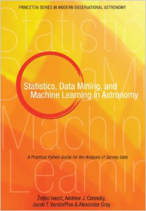

AstroML: Machine Learning and Data Mining for Astronomy¶


AstroML is a Python module for machine learning and data mining built on numpy, scipy, scikit-learn, and matplotlib, and distributed under the 3-clause BSD license. It contains a growing library of statistical and machine learning routines for analyzing astronomical data in python, loaders for several open astronomical datasets, and a large suite of examples of analyzing and visualizing astronomical datasets.
The goal of astroML is to provide a community repository for fast Python implementations of common tools and routines used for statistical data analysis in astronomy and astrophysics, to provide a uniform and easy-to-use interface to freely available astronomical datasets. We hope this package will be useful to researchers and students of astronomy. The astroML project was started in 2012 to accompany the book Statistics, Data Mining, and Machine Learning in Astronomy by Zeljko Ivezic, Andrew Connolly, Jacob VanderPlas, and Alex Gray, to be published in late 2013. The table of contents is available here: here(pdf).
User Guide¶
- 1. Introduction
- 2. Installation of astroML
- 3. Data Sets
- 4. Unsupervised Learning: Density Estimation
- 5. Unsupervised Learning: Clustering
- 6. Unsupervised Learning: Dimensionality Reduction
- 7. Supervised Learning: Regression
- 8. Supervised Learning: Classification
- 9. Time Series Analysis
- 10. Class reference
- 10.1. Plotting Functions: astroML.plotting
- 10.2. Density Estimation & Histograms: astroML.density_estimation
- 10.3. Linear Regression & Fitting: astroML.linear_model
- 10.4. Loading of Datasets: astroML.datasets
- 10.5. Time Series Analysis: astroML.time_series
- 10.6. Statistical Functions: astroML.stats
- 10.7. Dimensionality Reduction: astroML.dimensionality
- 10.8. Correlation Functions: astroML.correlation
- 10.9. Filters: astroML.filters
- 10.10. Fourier and Wavelet Transforms: astroML.fourier
- 10.11. Luminosity Functions: astroML.lumfunc
- 10.12. Classification: astroML.classification
- 10.13. Resampling: astroML.resample
- 10.14. Addon Functions astroML_addons
- 11. Other Resources
Example Plot Galleries¶
Development¶
Citing astroML¶
If you make use of any of these datasets, tools, or examples in a scientific publication, please consider citing astroML. You may reference the following paper:
Introduction to astroML: Machine learning for astrophysics, Vanderplas et al, proc. of CIDU, pp. 47-54, 2012.
Recipient of the best paper award for CIDU 2012
Bibtex entry:
@INPROCEEDINGS{astroML, author={{Vanderplas}, J.T. and {Connolly}, A.J. and {Ivezi{\'c}}, {\v Z}. and {Gray}, A.}, booktitle={Conference on Intelligent Data Understanding (CIDU)}, title={Introduction to astroML: Machine learning for astrophysics}, month={oct.}, pages={47 -54}, doi={10.1109/CIDU.2012.6382200}, year={2012} }
You may also reference the accompanying textbook:
Statistics, Data Mining, and Machine Learning for Astronomy, Ivezic et al, 2013
Bibtex entry:
@BOOK{astroMLText, title={Statistics, Data Mining and Machine Learning in Astronomy}, author={{Ivezi{\'c}}, {\v Z}. and {Connolly}, A.J. and {Vanderplas}, J.T. and {Gray}, A.}, publisher={Princeton University Press}, location={Princeton, NJ}, year={2013} }